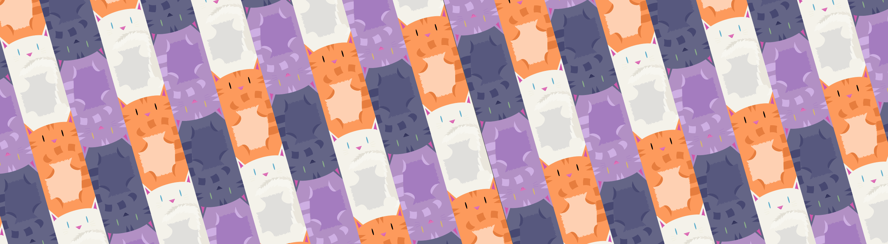

CAT KICKSTARTER
Context
Over winter break, I decided that I wanted to flex my artistic muscles by creating a vector pattern. Cats seemed like a fun theme. Within a week, however, I soon realized that what had started out as a tiny personal art project was actually a much larger, creative, and exciting venture!
The venture was created through Kickstarter and can be found here. :)
Art
I was initially inspired by the general shape of cats - what were their most distinguishing features? Their ears? Tails? Whiskers? And how did these features fit together into a cohesive system of cats? Additionally, how could I combine a simple silhouette, probably consisting of straight lines and angles, into an idea of something cute, cuddly, and fun to play with?
Color was also another thing I played around with. I wanted my cats to look and feel like cats, while still retaining a spunky and unique look to them. I ended up choosing four base colors for the cats.
After some initial sketches, trial and error in illustrator, and last minute tweaking, I created a system of four cats that fit together from head to tail!

Stickers
I thought a fun way of making the cats more interactive and delightful would be to bring them to life in sticker format. They can now sit side by side, climb over and under each other, and lie on top of each other!
The above images were the inital mockups. Eventually, I ordered a few test stickers from Sticker Mule that were dye cut - and they turned out perfectly!

Merch
In addition to stickers, I also thought it would be cute to add my cats to tote bags and pillows...
Paintings and Ebook
Finally, as a nod to my interest in fine arts, I also ended up painting a lot of watercolor cats and compiling them into an ebook complete with high-resolution scans and descriptions.


Overall, I painted over 55 watercolor cats! Some lessons learned: there is definitely a tradeoff between quality, detail, and the amount of time you can possibly spend painting. That being said, creating something that you know an individual will definitely love is such a rewarding experience.
Calendar
Finally, I created 12 final images to put on a 2017 calendar which I distributed to my Kickstarter backers, friends, and family. Here are a few of the months below:
Final Thoughts
What a rewarding experience, to be able to share my art with people across the globe! I ended up sending cat stickers, totes, pillows, and calendars to individuals in the UK, China, New Zealand, and Australia! In terms of creating multiple products at once, dealing with pricing, shipping, and customer service, I learned:
- Prepare for the worst, hope for the best
- You're never going to have as much time as you think you will
- Building relationships with customers is important
- I can do anything, if I put my mind to it and think a little creativly!